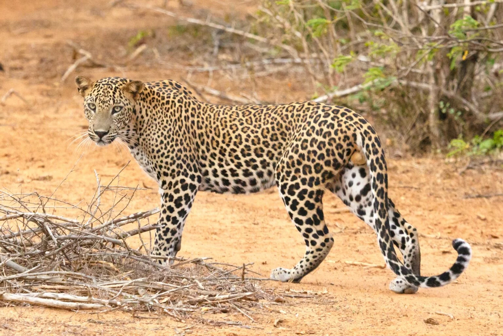
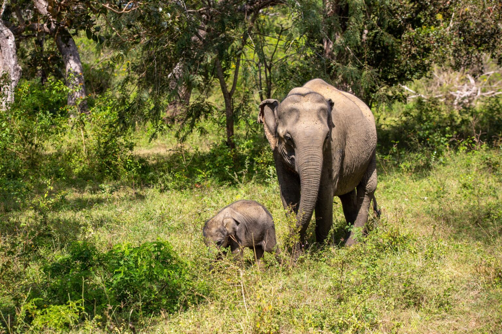
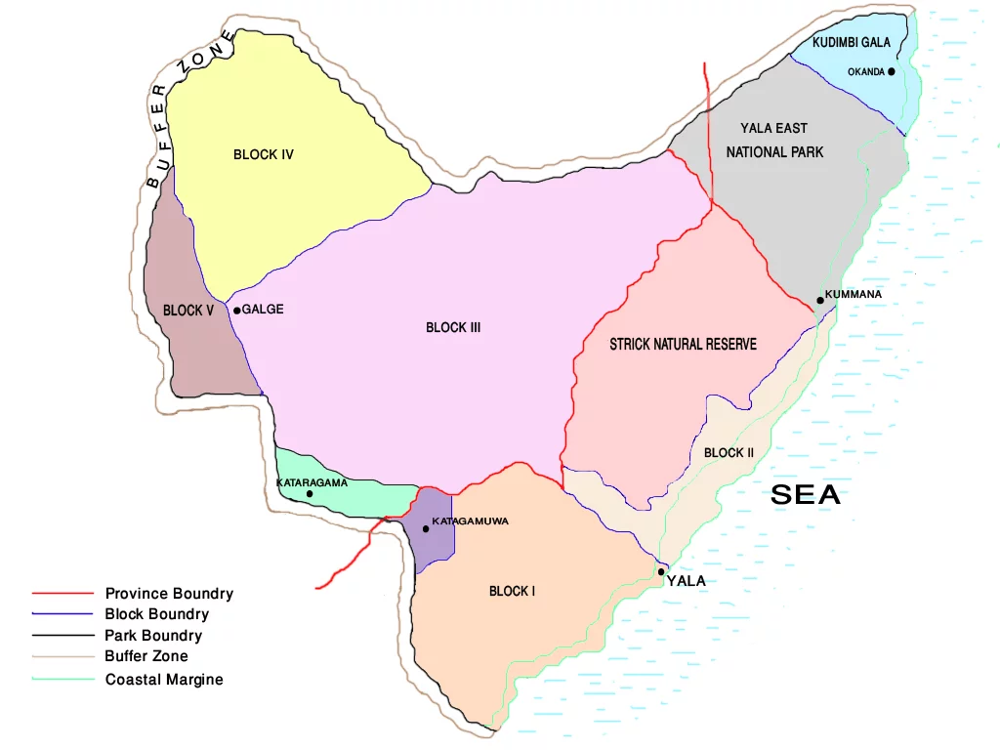

Maha Ravana Lighthouse got its name from the caves found in the local area on the seabed. The reef area was above the surface of the water and was “attached” to the rest of the island, and the caves served as a hideout for the ancient king, Ravana. After the sea level rose, these areas were flooded. Now there are lighthouses on top of both Great Basses and Little Basses reefs. There are three shipwrecks around the lighthouse on Great Basses. Both reefs abound with a large variety of fish and coral. Both sites can be reached from the town of Kirinda, from near the Jetwing Yala Hotel. And what is the history of shipwrecks? The entire southeastern coast of Sri Lanka was once located on the shipping route to China and India. Navigation in the local waters was difficult and ships often stranded on the local reefs. The three wrecks located near the Maha Ravana lighthouse are of Indian, British and Portuguese origin. Diving there, you can find many interesting things – from British shells or beer bottles, to pieces of old ship decorations, and coins. It is worth mentioning that in the Indian ship that belonged to Moghul emperor Aurangzeb, there were probably only silver rupees that the ruler wanted to pay for the marble from which the Taj Mahal was built in the early 17th century. Arthur C Clarke (British novelist and science fiction writer) searched for this vessel and found it in 1961, extracting a significant portion of the valuables.(Limits, 2023)
In a park can meet a many various of animals, especially birds and mammals. Here live the famous leopards, elephants (about 250 – 350 individuals data depending on the source), Asian buffalo, the chital, varanus, Sambar deer, crocodiles, peccaries, sloth bear and numerous species of monkeys. It is also an excellent place for bird watching. Among the trees, you can spot magnificent, colorful peacocks, parrots, eagles, herons, birds of the trogon (genus), or pelicans. Some of the more popular local trees are the tamarind and the tamanu tree.(Limits, 2023)
 Yala National Park is located in the southeastern part of Sri Lanka, about 290 kilometers from the capital, Colombo. The reserve is located along the southeast coast and borders the waters of the Indian Ocean. Some of Sri Lanka’s best surfing, swimming, and diving conditions occur here. Less than 13 kilometers offshore are the two coral reefs of Great Basses and Little Basses, as well as the two lighthouses of Maha Ravana, and Kuda Ravana.(Limits, 2023)
While in the park, let’s not shout or leave the vehicle. We do not dress in bright colors. Instead, we choose earth tones or greens. When going on a full-day safari, let’s make sure we have charged batteries for our camera. Afternoon safaris in Yala are a bit calmer than the morning trips (fewer tourists) and leopards, as well as other wildlife, are more active at this time (due to lower temperatures).(Limits, 2023)